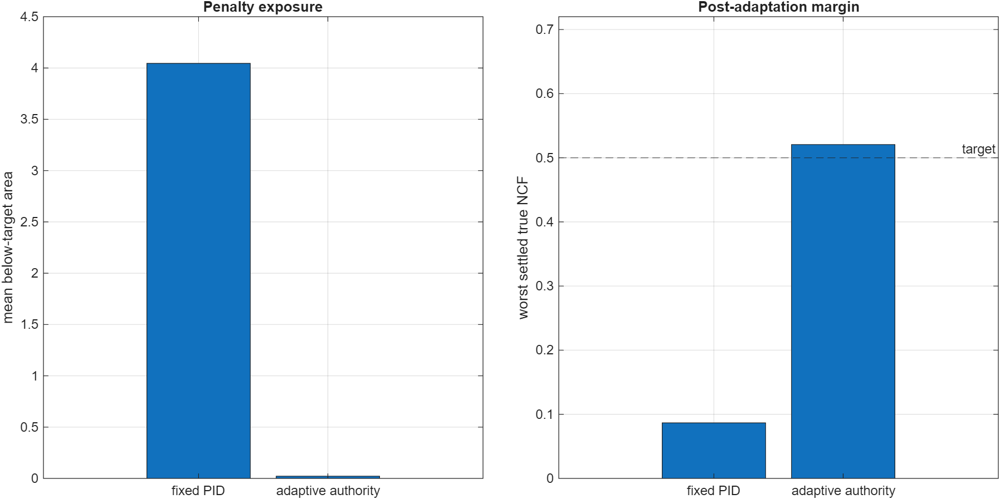
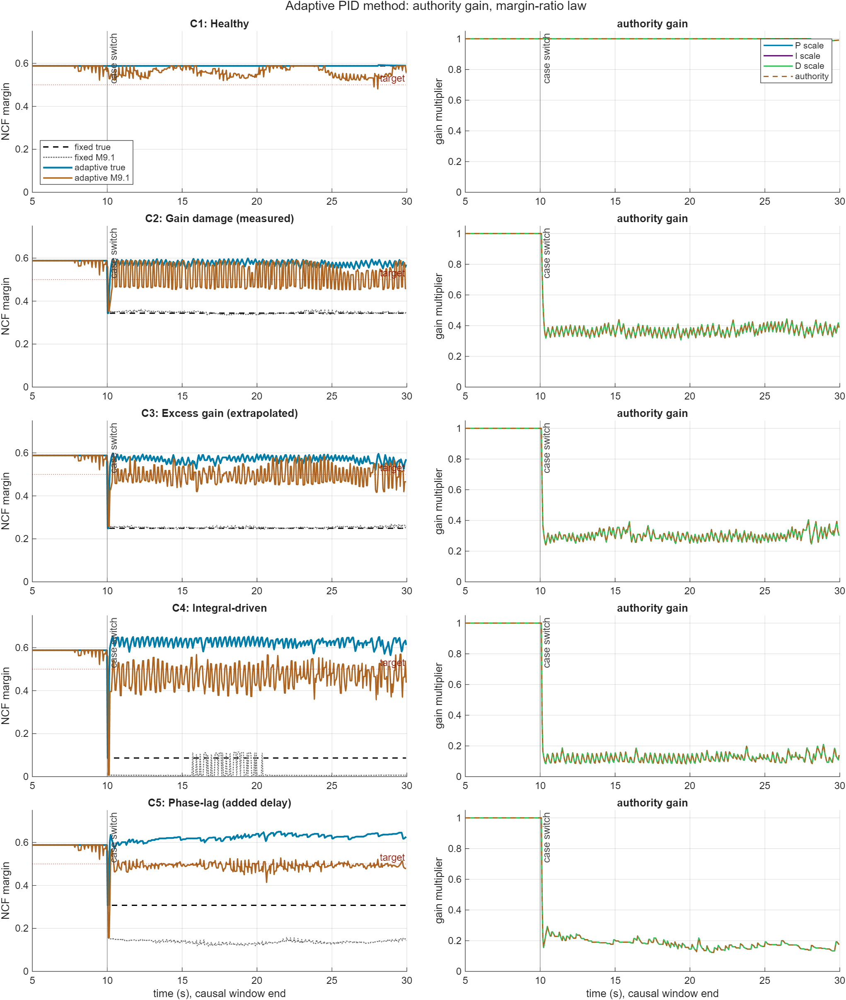

Adaptive PID Authority Case Comparison
Authority-only adaptive PID study using production OSI M9.1 at a 0.050 s update interval. The controller multiplies P, I, and D by one authority factor while leaving derivative-filter N unchanged.
0.050 sM9.1 update interval
0.500target NCF margin
99.5%below-target area reduction
0.521worst adaptive settled true NCF
The immediate post-switch minimum is shared by all causal adaptive runs before enough M9.1 window data is available. The settled metric starts after the M9.1 window plus the configured reaction delay.
Summary Plot

Case Comparison
| Case | Name | Fixed min true NCF | Adaptive settled true NCF | Fixed below area | Adaptive below area | Reduction | Min authority | Max authority |
|---|---|---|---|---|---|---|---|---|
| C1 | Healthy | 0.588 | 0.588 | 0.000 | 0.000 | 0.0% | 0.967 | 1.000 |
| C2 | Gain damage (measured) | 0.344 | 0.549 | 3.119 | 0.019 | 99.4% | 0.308 | 1.000 |
| C3 | Excess gain (extrapolated) | 0.249 | 0.521 | 5.009 | 0.029 | 99.4% | 0.241 | 1.000 |
| C4 | Integral-driven | 0.087 | 0.565 | 8.255 | 0.043 | 99.5% | 0.084 | 1.000 |
| C5 | Phase-lag (added delay) | 0.308 | 0.606 | 3.843 | 0.019 | 99.5% | 0.124 | 1.000 |
Margins And Authority Over Time

Authority Law
a_desired = a * (max(m91_margin, 0.05) / target_margin)^power. Authority moves down quickly when M9.1 reports margin below target and recovers slowly toward 1.0 above the deadband.